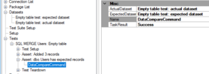
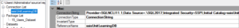
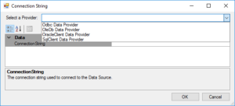

One of the elements you can define in ssisUnit is a Dataset. In this post of the ssisUnit series, I will show you how to prepare and use it later in a test.
The Dataset
As you can see in the image above, the dataset is a named result that contains data. It has five attributes (although you can see just four of them in the GUI):
- Name (required) - the name of the dataset, used for referencing the dataset in a test
- IsResultsStored (required) - the boolean flag informing if we have the results cached (true) or we always ask the external source (false)
- Connection (required) - the connection reference for the dataset retrieval
- Query (optional) - the query for the dataset definition
- Results (optional) - the cached dataset (not available in the GUI)
You can find all of the attributes in the SsisUnit.xsd file in the source code.
Why would you use the dataset? Verifying the numbers is almost always enough, but I have the cases I have to check the actual data after the processing. Like testing the SCD1 or SCD2 attributes, verifying the MERGE statements, checking UPDATEs on the data. I prepare a small reference data and compare it using DataCompareCommand.
[caption id=“attachment_318” align=“aligncenter” width=“300”] The goal: compare data in the table (actual data) with the reference data (expected data)[/caption]
The scenario
I will test loading users data from the staging table to the destination table. I have the stg.Users table with the information from the source system, and I want to transfer it to the dbo.Users table using the rules:
- the natural key in
dbo.Usersis (SourceId, SourceSystemId) - the natural key in
stg.Users is (`Id, SourceSystemId`) - if the record from
stg.Usersis not indbo.Users, then add it - if the record exists in
dbo.Usersand has different data than the record instg.Users, then update it - if the record exists in
dbo.Usersand doesn’t exist instg.Users- mark it as deleted (IsDeleted= 1) - when the new record is inserted, the columns
InsertedAuditIdandUpdatedAuditIdhave the same value - when the record is updated, the column
UpdateAuditIdis updated, andUpdateAuditId>InsertedAuditId - only the records with the changed attributes get an update
I will use the MERGE statement for the data loading process. In the package I will also use two _SQL Task_s for auditing. I have meta.Audit table for tracking the executions of the packages and I use meta.uspPackageStart and meta.uspPackageFinish stored procedures to insert and update the audit data. The package looks like in the picture below.
I will define the tests to run later in the post.
Defining the ssisUnit connections
One of the dataset’s attributes is a Connection. It’s not any of the connections defined within the SSIS package or the project. It’s the connection defined in the ssisUnit test suite.
[caption id=“attachment_310” align=“aligncenter” width=“300”] ssisUnit connection[/caption]
The connection has four attributes:
- Connection string - the connection string to the external source
- Connection type - the type of the connection (supported types: ConnectionString and Ado.Net)
- Invariant type - the type of the Ado.Net provider (when used)
- Reference name - the name of the connection to use in
SqlCommandorDatasetCommand
I use a Connection string for the database communication. When you add a new connection, you have only the text box for entering the connection string, or you can pick the provider to enter all the data.
After you fill the connection information, the wizard detects the type and displays them in the proper format.
The connection reference should be ready to use. But when you try to use it in the SqlCommand right after creating it you will see the error:
It’s not a ssisUnit problem, but the GUI problem - it has some issues with refreshing the object information. Just save the test, open it again, and everything will work fine.
The test, the setup, the teardown
Now you can use SQL commands to query the database about the data. You can also prepare and destroy data before and after the test during the setup and teardown phases. But first - the test itself. Create a new test SQL MERGE Users: Empty table using the SQL MERGE Users task. Now create the SqlCommand in the TestSetup node using right-click, and add the following code to setup stg.Users data:
WITH stgUsers AS ( SELECT * FROM ( VALUES (‘Name 1’, ‘Login 1’, 1, 1, 2, -1), (‘Name 2’, ‘Login 2’, 1, 2, 2, -1), (‘Name 3’, ‘Login 3’, 0, 3, 2, -1) )x (Name, Login, IsActive, Id, SourceSystemId, InsertedAuditId) ) INSERT INTO stg.Users ( Name, Login, IsActive, Id, SourceSystemId, InsertedAuditId ) SELECT Name, Login, IsActive, Id, SourceSystemId, InsertedAuditId FROM stgUsers ;
You should have something like in the picture below:
As you can see - the GUI has a feature of not displaying the name of the command in the test tree on the left.
As there is a code to set up the test I also have the code to tidy up after. I use two TRUNCATE TABLE commands to clean up the stg.Users and dbo.Users tables.
TRUNCATE TABLE stg.Users; TRUNCATE TABLE dbo.Users;
The test cases
There are a few test cases I want to run for the scenario mentioned above. I will cover them in this and following posts:
- the
stg.Userstable contains the data, and thedbo.Userstable is empty - the
stg.Userstable has the data, that does not exist in thedbo.Userstable anddbo.Userstable is not empty - the
stg.Userstable is not empty but lacks some records from thedbo.Userstable - the
stg.Userstable is empty and the dbo.Users table is not empty
Within those test cases I want to check:
- the number of records loaded to
dbo.Users - if the attributes are same in
stg.Usersanddbo.Users - if
InsertedAuditIdis equal toUpdatedAuditIdor greater when appropriate - if every required record marked with
IsDeleted= 1
This time I will not use the variables to hold the results. I will run separate SQL statements to verify the count of the records in the table and write expected and actual datasets code to verify if they match. I will focus on the dataset part.
I will load three records to the stg.Users table (with the T-SQL code above) and process them with the package. Then I will check if these records are loaded to the dbo.Users table and if they have the same values (excluding audits and the Id column). To verify I will use just the SELECT statement from the code above as the reference data and compare it to the SELECT statement on dbo.Users table.
Creating and using the datasets (finally!)
To create the dataset go to the Datasets node, right-click, and select Add Dataset. Prepare two datasets: Empty table test: expected dataset and Empty table test: actual dataset. At the beginning try to be very descriptive, it helps with getting familiar with the terminology and the process.
For the expected dataset use the T-SQL code above changing InsertAuditId = -1 column to IsDeleted = 0, set the ssisUnitLearningDB connection prepared in the previous steps and leave IsResultsStored flag as false. For the actual dataset use a SELECT query on the dbo.Users table. You should get the code similar to this one:
To use the dataset in the test use Add Command / DatasetCommand on the right-click menu on the Assert node. Use the created expected and actual datasets and leave TaskResult as Success.
The whole test looks like this:
Save the test and hit the Run button.
The test failed
The actual result (False) did not match the expected result (True). 3 rows differ between the expected “Empty table test: expected dataset” and actual “Empty table test: actual dataset” datasets.
Tuning the test
There are few things to have in mind when preparing the datasets:
- the dataset compare checks the data AND the data types
- if you don’t specify ORDER BY, most of the times you don’t get the required order
When you check the datatypes of the expected and actual datasets you will see the difference:
EXEC sp_describe_first_result_set N' SELECT * FROM ( VALUES (‘‘Name 1’’, ‘‘Login 1’’, 1, 1, 2, 0), (‘‘Name 2’’, ‘‘Login 2’’, 1, 2, 2, 0), (‘‘Name 3’’, ‘‘Login 3’’, 0, 3, 2, 0) )x (Name, Login, IsActive, Id, SourceSystemId, IsDeleted) ‘;
EXEC sp_describe_first_result_set N’ SELECT Name, Login, IsActive, SourceId, SourceSystemId, IsDeleted FROM dbo.Users; ‘;
Column
Type (expected)
Type (actual)
Name
VARCHAR(6)
VARCHAR(50)
Login
VARCHAR(7)
CHAR(12)
IsActive
INT
BIT
SourceId
INT
INT
SourceSystemId
INT
TINYINT
IsDeleted
INT
BIT
Change the expected dataset to match the data types:
SELECT * FROM ( VALUES (CAST(‘Name 1’ AS VARCHAR(50)), CAST(‘Login 1’ AS CHAR(12)), CAST(1 AS BIT), CAST(1 AS INT), CAST(2 AS TINYINT), CAST(0 AS BIT)), (CAST(‘Name 2’ AS VARCHAR(50)), CAST(‘Login 2’ AS CHAR(12)), CAST(1 AS BIT), CAST(2 AS INT), CAST(2 AS TINYINT), CAST(0 AS BIT)), (CAST(‘Name 3’ AS VARCHAR(50)), CAST(‘Login 3’ AS CHAR(12)), CAST(0 AS BIT), CAST(3 AS INT), CAST(2 AS TINYINT), CAST(0 AS BIT)) )x (Name, Login, IsActive, Id, SourceSystemId, IsDeleted) ORDER BY Id;
And add an ORDER BY clause to the actual dataset:
SELECT Name, Login, IsActive, SourceId, SourceSystemId, IsDeleted FROM dbo.Users ORDER BY SourceId;
Now the test should pass.
So, when using datasets:
- create the connections to the database
- prepare expected and actual datasets with some T-SQL code
- make sure the data types in expected and actual sets match (use CAST and CONVERT if necessary)
- use ORDER BY
- make sure that the expected and actual datasets have the same number of rows
In the next post, I will show you how to persist the datasets in the test file and use the IsResultStored flag.


{kind=link}
{kind=link}
{kind=link}
{kind=link}
{kind=link}
{kind=link}
{kind=link}
{kind=link}